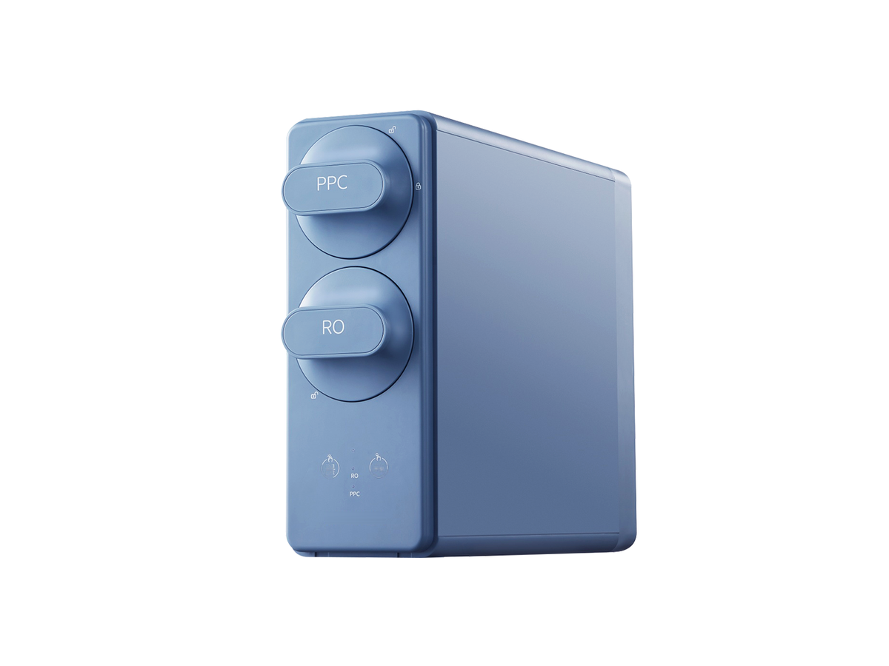

Under-Sink
Under-SinkRP-U07
400–600 GPD under-sink RO purifier
SKU: RP-U07
MOQ: Confirm on enquiry
Home / Products / Under-Sink RO Systems / RP-U09

Under-Sink RO Systems
High-capacity front-access RO purifier — two capacity tiers. RP-U09 leads the series.
RP-U09 and RP-U10 are two capacity tiers of the same front-access RO purifier and share the same filtration scheme and front-access cartridge-change structure. RP-U09 is the high-capacity tier (800–1400 GPD, 2.0–3.5 L/min, 382 × 148 × 358.5 mm); RP-U10 is the compact tier (400–1000 GPD, 1.05–2.6 L/min, 398 × 114 × 303.5 mm). The two tiers overlap at 800–1000 GPD. Specifications are confirmed per model and order.
Voltage / frequency is configurable to the target country. Other configurations are confirmed per order.
Two capacity tiers — quote as RP-U09 and specify the tier (800–1400 GPD high-capacity or 400–1000 GPD compact).
Hover over a variant image to see its specifications. On touch screens, tap an image.


Full specifications for each variant, side by side. The specification table further down shows RP-U09's values.
| Specification | RP-U09-1 — high-capacity (M2102R) | RP-U09-2 — compact (M2103R) |
|---|---|---|
| RO capacity | 800–1400 GPD | 400–1000 GPD |
| RO production | 2.0–3.5 L/min | 1.05–2.6 L/min |
| Dimensions (L×W×H) | 382 × 148 × 358.5 mm | 398 × 114 × 303.5 mm; length includes cartridges |
| Rated purified volume | 4000 L | >4000 L |
| Filtration | Composite pre/post filter + RO | Composite pre/post filter + RO |
| Voltage / frequency | Configurable to target country | Configurable to target country |
| Colour | White | White, blue |
7 specification rows from the ROPureOEM catalogue.
| RO capacity | 800–1400 GPD |
|---|---|
| RO production | 2.0–3.5 L/min |
| Dimensions (L×W×H) | 382 × 148 × 358.5 mm |
| Rated purified volume | 4000 L |
| Filtration | Composite pre/post filter + RO |
| Voltage / frequency | Configurable to target country |
| Other configurations | Confirmed per order |
Specifications are taken from the ROPureOEM catalogue. Where a value is not yet confirmed, it is listed as “Confirmed per order” — we do not publish unconfirmed figures.
Under-Sink400–600 GPD under-sink RO purifier
SKU: RP-U07
MOQ: Confirm on enquiry
 Under-Sink
Under-SinkUnder-sink RO with storage heating
SKU: RP-U08
MOQ: Confirm on enquiry
 Under-Sink
Under-SinkThree-cartridge RO purifier
SKU: RP-U11
MOQ: Confirm on enquiry
 Under-Sink
Under-SinkCompact two-cartridge RO purifier
SKU: RP-U12
MOQ: Confirm on enquiry